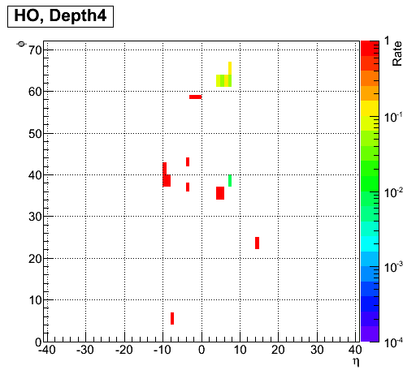
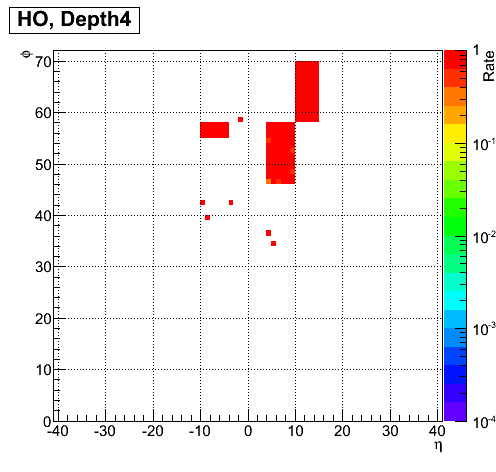
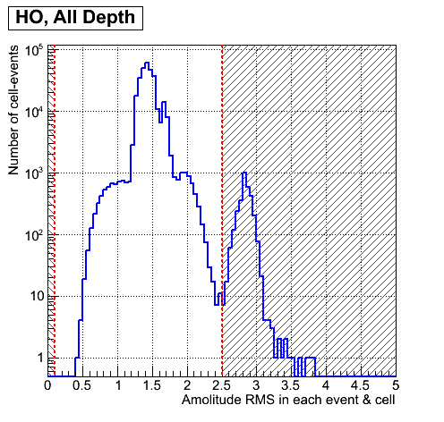
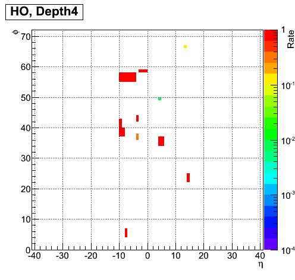
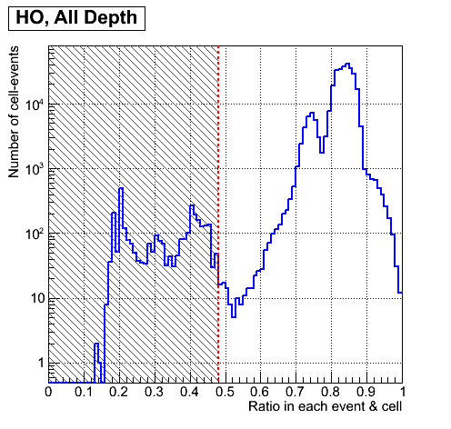
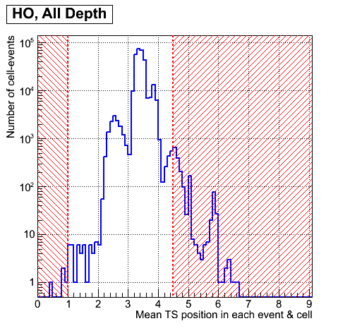
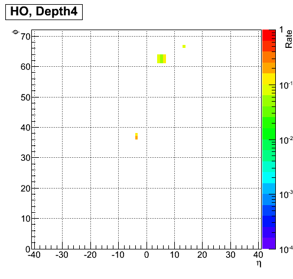
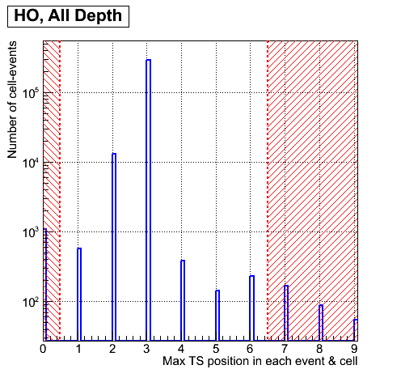

Tests of megatile channels for HO, RUN = 194057
1.Cm test: CapID errors for each channel.
1.A. Rate of CapId failures in each channel for each depth.
Channel legend: wthite - good, other colour - bad.

2. Am test: Mean ADC amplitude over all timeslices (TS) for each channel.
2.A. Combined mean ADC amplitude distribution over all events, channels and depths.
Legend: Bins less 40 correpond to bad ADC amplitude

2.B. Rate of bad ADC amplitude (<40) in each channel for each depth.
Channel legend: wthite - good, other colours - bad.

3. Wm test: RMS (width) of ADC amplutude for each channel.
3.A. Combined RMS distribution over all events, channel and depth.
Legend: Bins less 0.1 and more 2.5 correpond to bad RMS

2.B. Rate of bad RMS (<0.1,>2.5) in each channel for each depth.
Channel legend: wthite - good, other colour - bad.

4. Rm test: Ratio ADC value sum over four near maximum (-2, -1, max, +1) TS to ADC value sum over all TS for each channel.
4.A. Combined ratio distribution over all events, channels and depths.
Legend: Bins less 0.48 and more 1.02 correpond to bad ratio

3.B. Rate of bad ratio (<0.48, >1.02) in each channel for each depth.
Channel legend: wthite - good, other colour - bad.
5. TNm test: Mean TS position for each channel.
5.A. Combined mean TS position distribution over all events, channels and depths.
Legend: Bins less 1 and more 4.5 correpond to bad position

5.B. Rate of bad TS position (<1, >4.5) in each channel for each depth.
Channel legend: wthite - good, other colour - bad.

6.TXm test: Maximum TS position for each channel.
6.A. Combined maximum TS position distribution over all events, channel and depth.
Legend: Bins less 0.5 and more 6.5 correpond to bad position

6.B. Rate of bad TS position (<0.5, >6.5) in each channel for each depth.
Channel legend: wthite - good, other colour - bad.